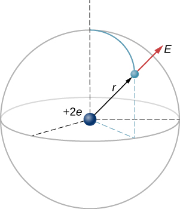
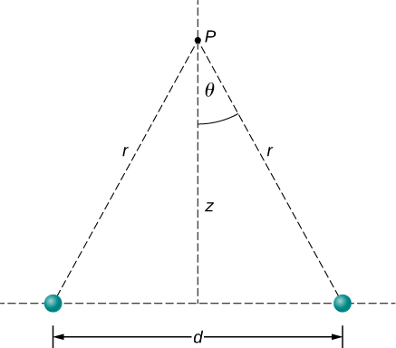
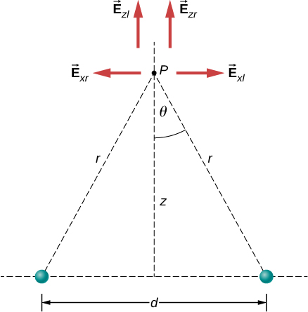
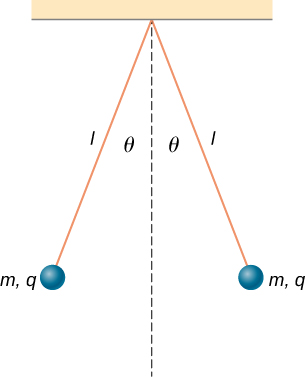

Calculate the field of a collection of source charges of either sign
As we showed in the preceding section, the net electric force on a test charge is the vector sum of all the electric forces acting on it, from all of the various source charges, located at their various positions. But what if we use a different test charge, one with a different magnitude, or sign, or both? Or suppose we have a dozen different test charges we wish to try at the same location? We would have to calculate the sum of the forces from scratch. Fortunately, it is possible to define a quantity, called the electric field, which is independent of the test charge. It only depends on the configuration of the source charges, and once found, allows us to calculate the force on any test charge.
Defining a Field
Suppose we have N source charges located at positions , applying N electrostatic forces on a test charge Q. The net force on Q is (see [link])
We can rewrite this as
where
or, more compactly,
This expression is called the electric field at position of the N source charges. Here, P is the location of the point in space where you are calculating the field and is relative to the positions of the source charges ([link]). Note that we have to impose a coordinate system to solve actual problems.
Each of these eight source charges creates its own electric field at every point in space; shown here are the field vectors at an arbitrary point P. Like the electric force, the net electric field obeys the superposition principle.
Notice that the calculation of the electric field makes no reference to the test charge. Thus, the physically useful approach is to calculate the electric field and then use it to calculate the force on some test charge later, if needed. Different test charges experience different forces [link], but it is the same electric field [link]. That being said, recall that there is no fundamental difference between a test charge and a source charge; these are merely convenient labels for the system of interest. Any charge produces an electric field; however, just as Earth’s orbit is not affected by Earth’s own gravity, a charge is not subject to a force due to the electric field it generates. Charges are only subject to forces from the electric fields of other charges.
In this respect, the electric field of a point charge is similar to the gravitational field of Earth; once we have calculated the gravitational field at some point in space, we can use it any time we want to calculate the resulting force on any mass we choose to place at that point. In fact, this is exactly what we do when we say the gravitational field of Earth (near Earth’s surface) has a value of and then we calculate the resulting force (i.e., weight) on different masses. Also, the general expression for calculating at arbitrary distances from the center of Earth (i.e., not just near Earth’s surface) is very similar to the expression for : , where G is a proportionality constant, playing the same role for as does for . The value of is calculated once and is then used in an endless number of problems.
To push the analogy further, notice the units of the electric field: From , the units of E are newtons per coulomb, N/C, that is, the electric field applies a force on each unit charge. Now notice the units of g: From , the units of g are newtons per kilogram, N/kg, that is, the gravitational field applies a force on each unit mass. We could say that the gravitational field of Earth, near Earth’s surface, has a value of 9.81 N/kg.
The Meaning of “Field”
Recall from your studies of gravity that the word “field” in this context has a precise meaning. A field, in physics, is a physical quantity whose value depends on (is a function of) position, relative to the source of the field. In the case of the electric field, [link] shows that the value of (both the magnitude and the direction) depends on where in space the point P is located, measured from the locations of the source charges .
In addition, since the electric field is a vector quantity, the electric field is referred to as a vector field. (The gravitational field is also a vector field.) In contrast, a field that has only a magnitude at every point is a scalar field. The temperature in a room is an example of a scalar field. It is a field because the temperature, in general, is different at different locations in the room, and it is a scalar field because temperature is a scalar quantity.
Also, as you did with the gravitational field of an object with mass, you should picture the electric field of a charge-bearing object (the source charge) as a continuous, immaterial substance that surrounds the source charge, filling all of space—in principle, to in all directions. The field exists at every physical point in space. To put it another way, the electric charge on an object alters the space around the charged object in such a way that all other electrically charged objects in space experience an electric force as a result of being in that field. The electric field, then, is the mechanism by which the electric properties of the source charge are transmitted to and through the rest of the universe. (Again, the range of the electric force is infinite.)
We will see in subsequent chapters that the speed at which electrical phenomena travel is the same as the speed of light. There is a deep connection between the electric field and light.
Superposition
Yet another experimental fact about the field is that it obeys the superposition principle. In this context, that means that we can (in principle) calculate the total electric field of many source charges by calculating the electric field of only at position P, then calculate the field of at P, while—and this is the crucial idea—ignoring the field of, and indeed even the existence of, We can repeat this process, calculating the field of each individual source charge, independently of the existence of any of the other charges. The total electric field, then, is the vector sum of all these fields. That, in essence, is what [link] says.
In the next section, we describe how to determine the shape of an electric field of a source charge distribution and how to sketch it.
The Direction of the Field
[link] enables us to determine the magnitude of the electric field, but we need the direction also. We use the convention that the direction of any electric field vector is the same as the direction of the electric force vector that the field would apply to a positive test charge placed in that field. Such a charge would be repelled by positive source charges (the force on it would point away from the positive source charge) but attracted to negative charges (the force points toward the negative source).
Direction of the Electric Field
By convention, all electric fields point away from positive source charges and point toward negative source charges.
Add charges to the Electric Field of Dreams and see how they react to the electric field. Turn on a background electric field and adjust the direction and magnitude.
The E-field of an Atom
In an ionized helium atom, the most probable distance between the nucleus and the electron is . What is the electric field due to the nucleus at the location of the electron?
Strategy
Note that although the electron is mentioned, it is not used in any calculation. The problem asks for an electric field, not a force; hence, there is only one charge involved, and the problem specifically asks for the field due to the nucleus. Thus, the electron is a red herring; only its distance matters. Also, since the distance between the two protons in the nucleus is much, much smaller than the distance of the electron from the nucleus, we can treat the two protons as a single charge +2e ([link]).
A schematic representation of a helium atom. Again, helium physically looks nothing like this, but this sort of diagram is helpful for calculating the electric field of the nucleus.

Solution
The electric field is calculated by
Since there is only one source charge (the nucleus), this expression simplifies to
Here (since there are two protons) and r is given; substituting gives
The direction of is radially away from the nucleus in all directions. Why? Because a positive test charge placed in this field would accelerate radially away from the nucleus (since it is also positively charged), and again, the convention is that the direction of the electric field vector is defined in terms of the direction of the force it would apply to positive test charges.
The E-Field above Two Equal Charges
(a) Find the electric field (magnitude and direction) a distance z above the midpoint between two equal charges that are a distance d apart ([link]). Check that your result is consistent with what you’d expect when .
(b) The same as part (a), only this time make the right-hand charge instead of .
Finding the field of two identical source charges at the point P. Due to the symmetry, the net field at P is entirely vertical. (Notice that this is not true away from the midline between the charges.)

Strategy
We add the two fields as vectors, per [link]. Notice that the system (and therefore the field) is symmetrical about the vertical axis; as a result, the horizontal components of the field vectors cancel. This simplifies the math. Also, we take care to express our final answer in terms of only quantities that are given in the original statement of the problem: q, z, d, and constants
Solution
By symmetry, the horizontal (x)-components of cancel ([link]); . Note that the horizontal components of the electric fields from the two charges cancel each other out, while the vertical components add together.

The vertical (z)-component is given by
Since none of the other components survive, this is the entire electric field, and it points in the direction. Notice that this calculation uses the principle of superposition; we calculate the fields of the two charges independently and then add them together.
What we want to do now is replace the quantities in this expression that we don’t know (such as r), or can’t easily measure (such as with quantities that we do know, or can measure. In this case, by geometry,
and
Thus, substituting,
Simplifying, the desired answer is
If the source charges are equal and opposite, the vertical components cancel because
and we get, for the horizontal component of ,
This becomes
Significance
It is a very common and very useful technique in physics to check whether your answer is reasonable by evaluating it at extreme cases. In this example, we should evaluate the field expressions for the cases , , and , and confirm that the resulting expressions match our physical expectations. Let’s do so:
Let’s start with [link], the field of two identical charges. From far away (i.e., the two source charges should “merge” and we should then “see” the field of just one charge, of size 2q. So, let then we can neglect in [link] to obtain
which is the correct expression for a field at a distance z away from a charge 2q.
Next, we consider the field of equal and opposite charges, [link]. It can be shown (via a Taylor expansion) that for , this becomes
which is the field of a dipole, a system that we will study in more detail later. (Note that the units of are still correct in this expression, since the units of d in the numerator cancel the unit of the “extra” z in the denominator.) If z is very large , then , as it should; the two charges “merge” and so cancel out.
Check Your Understanding What is the electric field due to a single point particle?
The electric field is an alteration of space caused by the presence of an electric charge. The electric field mediates the electric force between a source charge and a test charge.
The electric field, like the electric force, obeys the superposition principle
The field is a vector; by definition, it points away from positive charges and toward negative charges.
Conceptual Questions
When measuring an electric field, could we use a negative rather than a positive test charge?
Either sign of the test charge could be used, but the convention is to use a positive test charge.
During fair weather, the electric field due to the net charge on Earth points downward. Is Earth charged positively or negatively?
If the electric field at a point on the line between two charges is zero, what do you know about the charges?
The charges are of the same sign.
Two charges lie along the x-axis. Is it true that the net electric field always vanishes at some point (other than infinity) along the x-axis?
Problems
A particle of charge experiences an upward force of magnitude when it is placed in a particular point in an electric field. (a) What is the electric field at that point? (b) If a charge is placed there, what is the force on it?
a. up;
b. down
On a typical clear day, the atmospheric electric field points downward and has a magnitude of approximately 100 N/C. Compare the gravitational and electric forces on a small dust particle of mass that carries a single electron charge. What is the acceleration (both magnitude and direction) of the dust particle?
Consider an electron that is from an alpha particle (a) What is the electric field due to the alpha particle at the location of the electron? (b) What is the electric field due to the electron at the location of the alpha particle? (c) What is the electric force on the alpha particle? On the electron?
a. ;
b. ;
c. on alpha particle;
on electron
Each the balls shown below carries a charge q and has a mass m. The length of each thread is l, and at equilibrium, the balls are separated by an angle . How does vary with q and l? Show that satisfies
.

What is the electric field at a point where the force on a charge is
A proton is suspended in the air by an electric field at the surface of Earth. What is the strength of this electric field?
The electric field in a particular thundercloud is What is the acceleration of an electron in this field?
,
A small piece of cork whose mass is 2.0 g is given a charge of What electric field is needed to place the cork in equilibrium under the combined electric and gravitational forces?
If the electric field is at a distance of 50 cm from a point charge q, what is the value of q?
What is the electric field of a proton at the first Bohr orbit for hydrogen What is the force on the electron in that orbit?
(a) What is the electric field of an oxygen nucleus at a point that is from the nucleus? (b) What is the force this electric field exerts on a second oxygen nucleus placed at that point?
a. ; b.
Two point charges, and are held 25.0 cm apart. (a) What is the electric field at a point 5.0 cm from the negative charge and along the line between the two charges? (b)What is the force on an electron placed at that point?
Point charges and are placed 1.0 m apart. (a) What is the electric field at a point midway between them? (b) What is the force on a charge situated there?
If the is to the right of the electric field vector from both charges point to the right. a. ;
b.
Can you arrange the two point charges and along the x-axis so that at the origin?
Point charges are fixed on the x-axis at and What charge q must be placed at the origin so that the electric field vanishes at
There is right triangle geometry. The x-components of the electric field at cancel. The y-components give .
At the origin we have a a negative charge of magnitide
.
Glossary
electric field
physical phenomenon created by a charge; it “transmits” a force between a two charges
superposition
concept that states that the net electric field of multiple source charges is the vector sum of the field of each source charge calculated individually
![Eight source charges are shown as small spheres distributed within an x y z coordinate system. The sources are labeled q sub 1, q sub 2, and so on. Sources 1, 2, 4, 7 and 8 are shaded red and sources 3, 5, and 6 are shaded blue. A test point is also shown and labeled as point P. The electric field vectors due to each source is shown as an arrow at point P, pointing toward point P and labeled with the index of the associated source. Vector E 1 points away from q 1, E 2 away from q 2, E 4 away from q 4, E 7 away from q 7, and E 8 away from q 8. Vector E 3 points toward q 3, vector E 5 toward q 5, and vector E 6 toward q 6.](CNX_UPhysics_22_04_8FieldVecs.jpg)